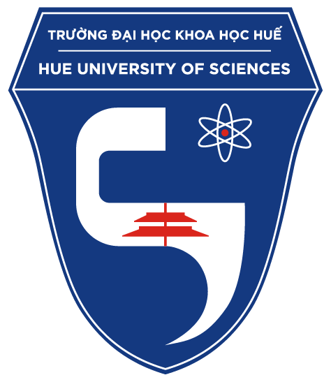

Join us
65 YEARS
ANNIVERSARY
23 Ngành đào tạo
Bao gồm đầy đủ các ngành từ tự nhiên đến xã hội. Đáp ứng nhu cầu việc làm của thị trường.
6 Khối chuyên
Đào tạo kĩ lưỡng các môn khoa học một cách thâm sâu nhất từ cấp 3 theo mô hình trường chuyên.

10 Khu phòng học
Đảm bảo đầy đủ cơ sở vật chất với phòng học thoáng mát và phòng thí nghiệm hiện đại.